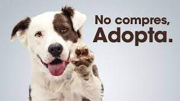

ADOPCION DE MASCOTAS

Por qué es mejor adoptar una mascota?
Resultado de imagen para adopcion de mascotas Al adoptar a un perro abandonado contribuyes a reducir el número de perros que viven en dichas entidades, y a mejorar las condiciones (recursos y fondos) de los que esperan que alguien los adopte. Los refugios manejan un donativo que es muy bajo en comparación con la compra. Éste varía de un refugio a otro.